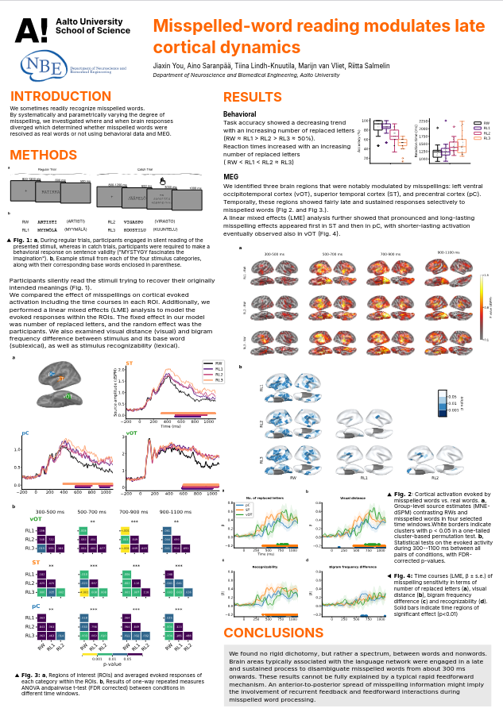
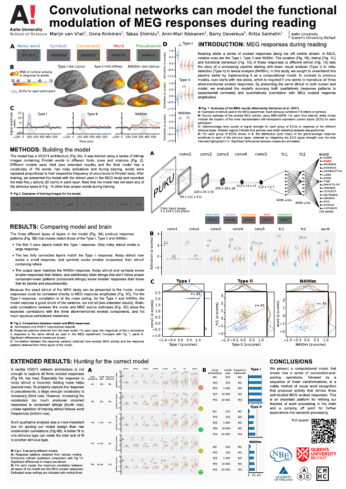
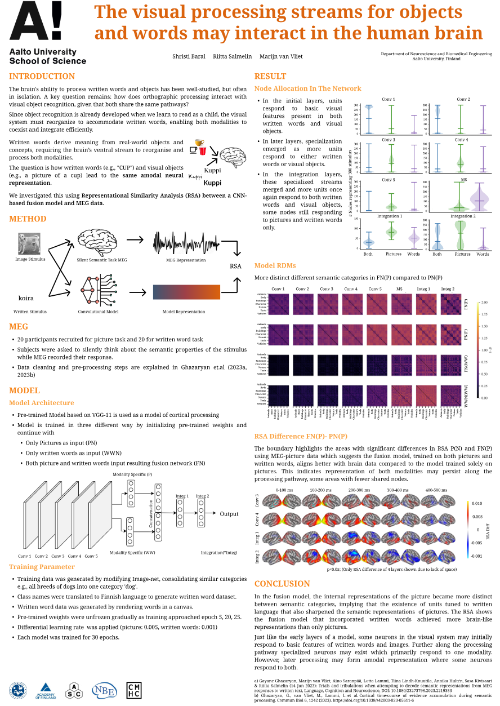

Neuro-Computational Information Processing
Mission
It is our mission to understand how the brain processes information: how information enters it, how low-level information gets processed into higher-level information, how it integrates with other information, and how decisions are made based on it.
Aalto University is famous for its pioneering work in brain imaging methods development. It is one of the birthplaces of MEG and is now performing ground breaking work in optically pumped magnetometer (OPM) sensor technology to drive the possibilities even further. This group combines experimental work using these imaging methods with advanced data analysis and formal computational modeling to piece together the various information streams throughout the brain.
Lab Members
Shristi Baral
PhD Candidate

Creating semantic representations through integration of multiple modality-specific processing streams.
Jiaxin You
PhD Candidate
Resolution of misspelled words through top-down connections. Also part of the Imaging Language group.
Marijn van Vliet
Academy Research Fellow
Linking neuro-computational processing streams to neuroimaging data.
Research Projects
Misspelled-word reading modulates late cortical dynamics
Jiaxin You, Aino Saranpää, Tiina Lindh-Knuutila, Marijn van Vliet, Riitta Salmelin
Literate humans can effortlessly interpret tens of thousands of words, even when the words are sometimes written incorrectly. This phenomenon suggests a flexible nature of reading that can endure a certain amount of noise. In this study, we investigated where and when brain responses diverged for conditions where misspelled words were resolved as real words or not. We used magnetoencephalography (MEG) to track the cortical activity as the participants read words with different degrees of misspelling that were perceived to range from real words to complete pseudowords, as confirmed by their behavioral responses. In particular, we were interested in how lexical information survives (or not) along the uncertainty spectrum, and how the corresponding brain activation patterns evolve spatiotemporally. We identified three brain regions that were notably modulated by misspellings: left ventral occipitotemporal cortex (vOT), superior temporal cortex (ST), and precentral cortex (pC). This suggests that resolving misspelled words into stored concepts involves an interplay between orthographic, semantic, and phonological processing. Temporally, these regions showed fairly late and sustained responses selectively to misspelled words. Specifically, an increasing level of misspelling increased the response in ST from 300 ms after stimulus onset; a functionally fairly similar but weaker effect was observed in pC. In vOT, misspelled words were sharply distinguished from real words notably later, after 700 ms. A linear mixed effects (LME) analysis further showed that pronounced and long-lasting misspelling effects appeared first in ST and then in pC, with shorter-lasting activation also observed in vOT. We conclude that reading misspelled words engages brain areas typically associated with language processing, but in a manner that cannot be interpreted merely as a rapid feedforward mechanism. Instead, feedback interactions likely contribute to the late effects observed during misspelled-word reading.
Convolutional networks can model the functional modulation of MEG responses during reading
Marijn van Vliet, Oona Rinkinen, Takao Shimizu, Anni-Mari Niskanen, Barry Devereux, Riitta Salmelin
To better understand the computational steps that the brain performs during reading, we used a convolutional neural network as a computational model of visual word recognition, the first stage of reading. In contrast to traditional models of reading, our model directly operates on the pixel values of an image containing text, and has a large vocabulary of 10k Finnish words. The same stimuli can thus be presented unmodified to both the model and human volunteers in an MEG scanner. In a direct comparison between model and brain activity, we show that the model accurately predicts the amplitude of three evoked MEG response components commonly observed during reading. We conclude that the deep learning techniques that revolutionized models of object recognition can also create models of reading that can be straightforwardly compared to neuroimaging data, which will greatly facilitate testing and refining theories on language processing in the brain.
The visual processing streams for objects and words may interact in the human brain
Shristi Baral, Riitta Salmelin, Marijn van Vliet
The brain's ability to process written words and objects has been well-studied, but often in isolation. A key question remains: how does orthographic processing interact with visual object recognition, given that both share the same pathways? Since object recognition is already developed when we learn to read as a child, the visual system must reorganize to accommodate written words, enabling both modalities to coexist and integrate efficiently. Written words derive meaning from real-world objects and concepts, requiring the brain’s ventral stream to reorganise and process both modalities. The question is how written words (e.g., "CUP") and visual objects (e.g., a picture of a cup) lead to the same amodal neural representation. We investigated this using Representational Similarity Analysis (RSA) between a CNN-based fusion model and MEG data.
Models
The CMHC lab maintains a set of models that you can interact with through your browser.
Word2Vec Guessing Game
Think of a target word and give "clue" words below that describe the target. The word2vec model will give the 10 words closest to the semantic mean of the given clues. See if you can make the computer guess your chosen target word.
Word2Vec Semantic Projection
Describe a dimension by thinking of words that create a contrast. Make sure to enter them "pairwise", meaning that the first negative word is the antonym of the first positive word. Finally, enter some words to be compared along the dimension.
Software
MNE-RSA
Representational similarity analysis for MNE-Python
A plugin for MNE-Python to perform representational similarity analysis (RSA) on EEG & MEG data in a searchlight fashion. It includes best practice features such as cross-validation and PCA preprocessing.
Pytorch-HMAX
The HMAX model of vision implemented in PyTorch
A PyTorch implementation of the HMAX model that closely follows that of the MATLAB implementation of The Laboratory for Computational Cognitive Neuroscience of Georgetown University.
Post-Hoc
Inject domain information into your scikit-learn models
Post-hoc modification of linear models is a way to decompose a linear scikit-learn model into three matrices: the pattern, the covariance, and the normalizer. These matrices can be modified at will to inject domain information and then re-assembled into a linear model.
Torch-PCDIM
The DIM predictive coding model implemented in PyTorch
A PyTorch implementation of DIM-stype predictive coding where each layer is predicting the preceding layer while propagating prediction error forwards. It can be used to simulate evoked responses. Includes an implementation of Nour Eddine et al. (2024).